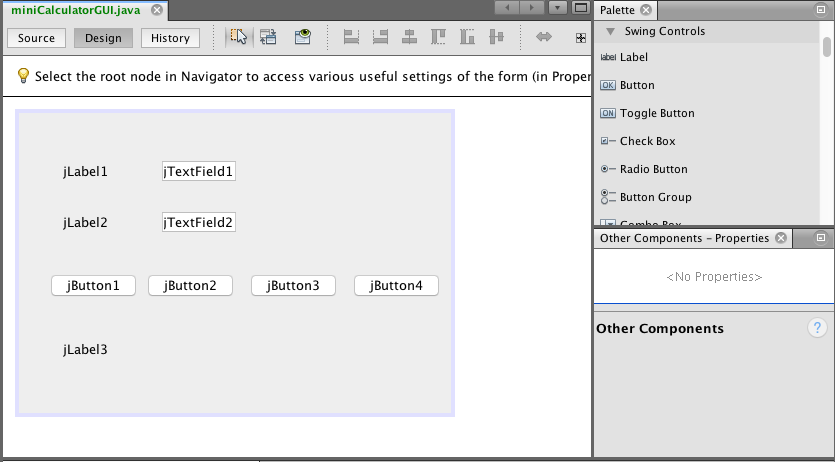
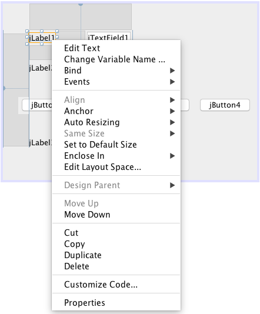
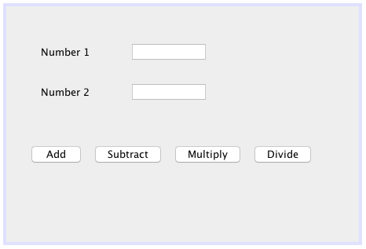
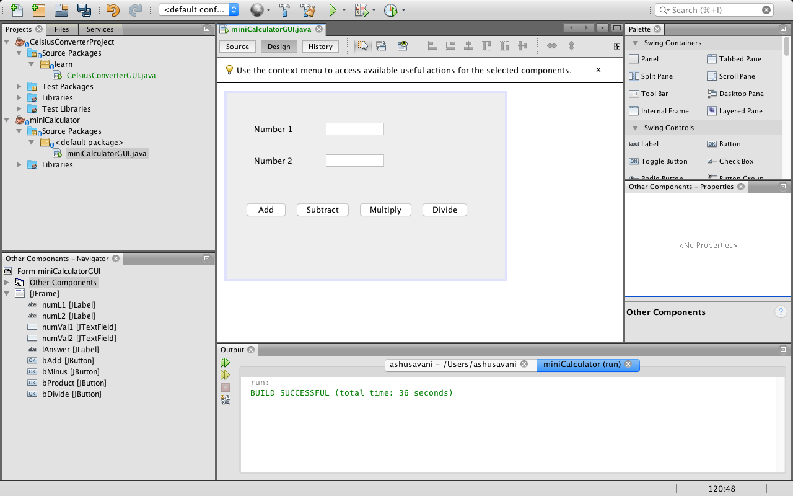
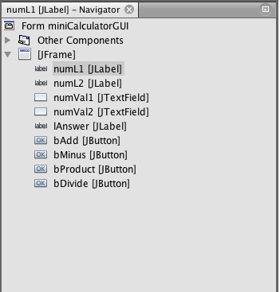
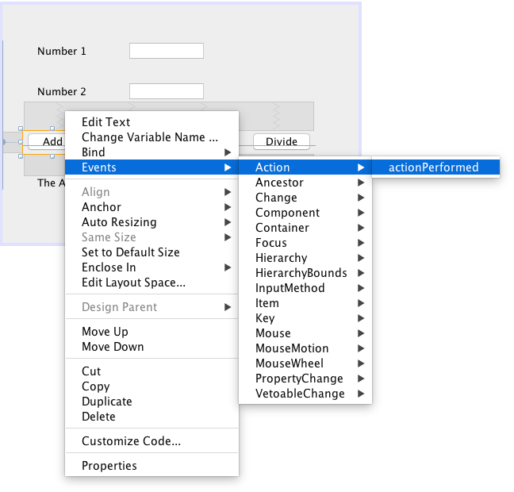
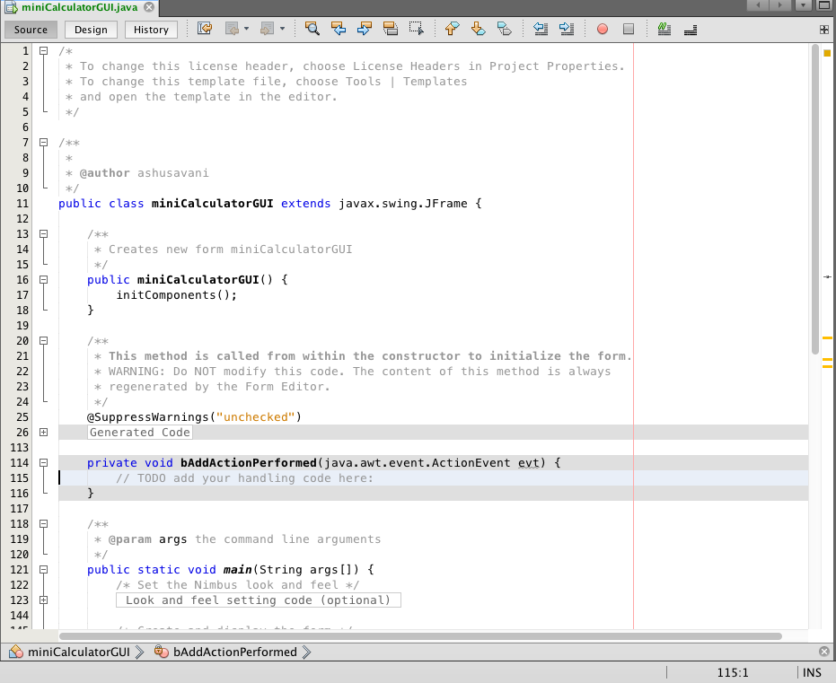

Since we’ve gotten this far in Swing, we now know that this form of Java is used to create graphical user interfaces e.g. applications like menus. To create items like this, we need to have a basic idea of how they work, and how to create components involved with menus e.g. buttons, labels, text boxes and etc. So what are these components and what do they actually do? Here’s a short list of them:
These are just a few components; The Swing library contains many, many components that you can use depending on its function and purpose. Know that we have a brief idea of what these components are, lets take a look at how they work by creating a mini application.
We can start off by creating a new project (you can name it miniCalculator). After which we can create a JFrame called miniCalculatorGUI. All the features we talked about are of the type JComponents, and they are referred to as Swing UI elements (since they are used to create a user interface). Since we’re using the net beans development environment, we don’t have to write a piece of code to create these elements! We can drag and drop them onto the frame, and their code is automatically generated. Now that all that boring stuff is out of the way, we can actually learn how to add all these cool features we talked about; They are all found in a window called the palette and you can just drag and drop them onto the form.
So we’re going to be using three labels (two to describe the text fields, and the other to display the answer of the calculations). We are also going to use 4 buttons for the following operations:
Sounds really exciting right? Finally, we are going to use two JTextFields for two numbers (to make life slightly easier). Now that you know what we’re going to use, try dragging and dropping components onto your miniCalculatorGUI. While you’re arranging the components, you’ll see blue lines that help with alignment; this is an extremely useful feature. this is what it can look like when you are done.:
Now that we have our layout, we need to re-name the appropriate labels, and also edit their variable names. This is how you can do it: if you right click on a label, you get the following options:
You click the edit name options and set all the names. At the end of the process, this is what it should look like. The last label is not visible because all its text has been deleted.:
If you look in the bottom left corner, there will be a window called Navigator. This shows the UI elements inserted into the jFrame Container. They have the JComponent name and its type in square brackets.
As you’ve seen above, the right click option also has the change variable name. So we’re going to change the variable names so that they’re easier to work with. This is what the navigator window will look like once we’re done:
Now we can actually start writing code for the program. But before that, we need to know a bit about how Swing Works and why it’s a bit different from other technology out there:
So we want the specific buttons to do specific events; the addition button needs to add numbers in the text fields and so on. To make this happen, we need to write it in a specific code block; to do this, right click the first add button, choose events, actions and then actions performed
this is what your source code will look like:

float first = Float.parseFloat(numVal1.getText());
float second = Float.parseFloat(numVal2.getText());
float third = first + second;
lAnswer.setText(String.valueOf(third));
here is an explanation for the code
First a float variable is being declared to hold the value in the first text field. All the data that is typed in is stored as text, but we need numbers to calculate. The Float.parseFloat converts the text to float values. The numVal1.getText() is used to obtain the data that is typed in. The same code is used to store float values from the second text box. Another variable is declared that is used to do the addition. Finally, the lAnswer.setText() is used to update the value of the label; since the label only accepts string, the String.valueOf(third) is used to change the float back to the string.
To update the other buttons, follow the same procedure as above and just change the signs that produce the new values. After all this, save your work and try run the program and it should work perfectly!